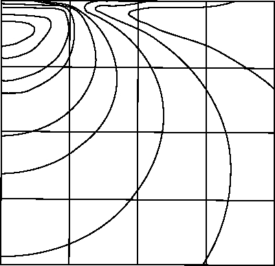
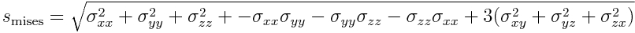
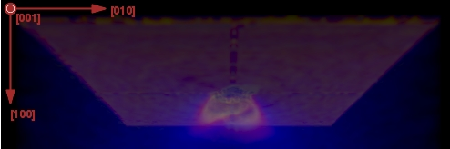
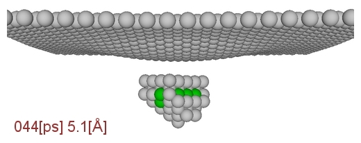
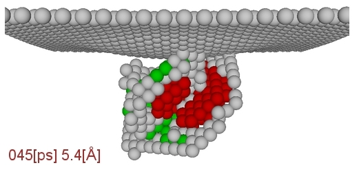
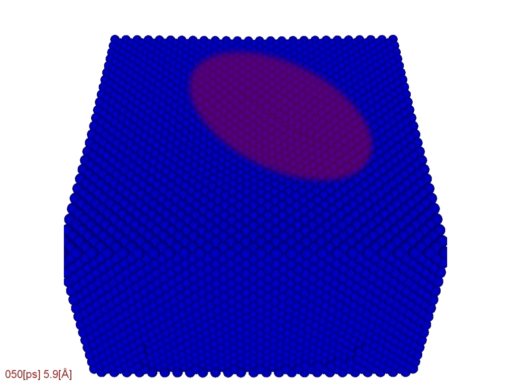
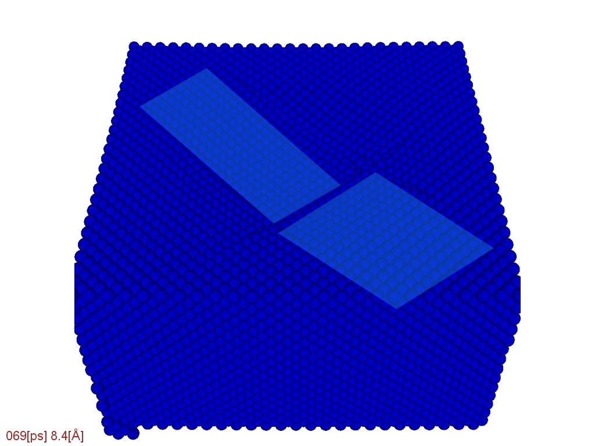
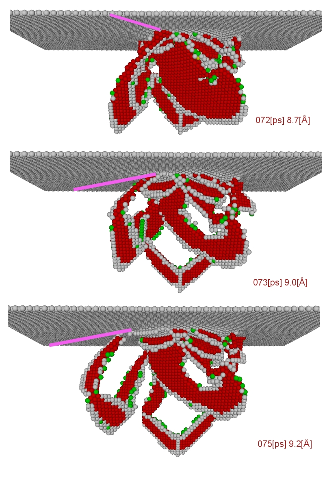
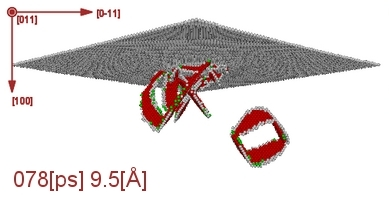
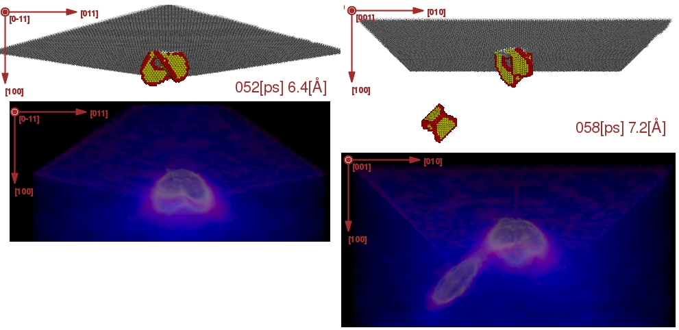

Introduction
Plasticity is the nonreversible reaction of a material under stress. Its physics is dominated by material transport (glide) and therefore, the stress-strain relation is not unique anymore. For an ideal single crystal, this means that the crystalline structure is disturbed locally and defects are generated. These defects can be classified in surface and volume defects. In experiments, surface defects are more directly accessible than volume defects. The latter can easily be investigated using atomistic simulations. The following atomistic pictures have been obtained from a molecular-dynamics simulation of the indentation of a 8nm diameter sphere into a Cu (100) crystallite with a velocity of 12.8 m/s. The scales on the frames indicate the indentation time and the indentation depth.
Stress Distribution
We will consider an ideal spherical indenter which is moved down into a fcc substrate in (100) direction. This process will induce a stress field. In continuum theory the region of maximal stress is predicted to be under the indenter. Consistently plasticity will also set in there.

As plasticity means that some particles will move and others not, an inhomogenous stress is essential. Therefore, ther shear stress is relevant. A scalar measure for the stress relevant for plasticity is the von Mises stress

It follows the symmetry of the crystalline structure.

Onset of Plasticity
As discussed above, plasticity will set in not at the surface but in the volume of the substrate, where the theoretical maximal shear stress is exceeded.

After a primary defect cluster has been nucleated, partial dislocation loops propagate both into the volume and up to the surface. They can be observed as small cracks in the surface under the indenter. The inner of the partials has a hcp structure.


Gliding and Material Transport
Under the applied stress material transport will occur. This can be imagined similar to a carpet through which a fold is moving: the fold will propagate a piece of the carpet forwards. The same happens to the crystal.

Cross Glide and Prismatic Loops
Energy is not only transferred into the elastic deformation but also into plasticity. If a specific energy is reached cross glide occurs; it can be seen when the moving partials change their direction. This process ends in the nucleation of a prismatic dislocation loop.


The Mises stress of this prismatic dislocation suggests that a prismatic loop transports encapsulated shear stress into the material.

References
- Schematic drawing after Fischer-Cripps, Nanoindentation (2004)
G. Ziegenhain - 2.11.2007